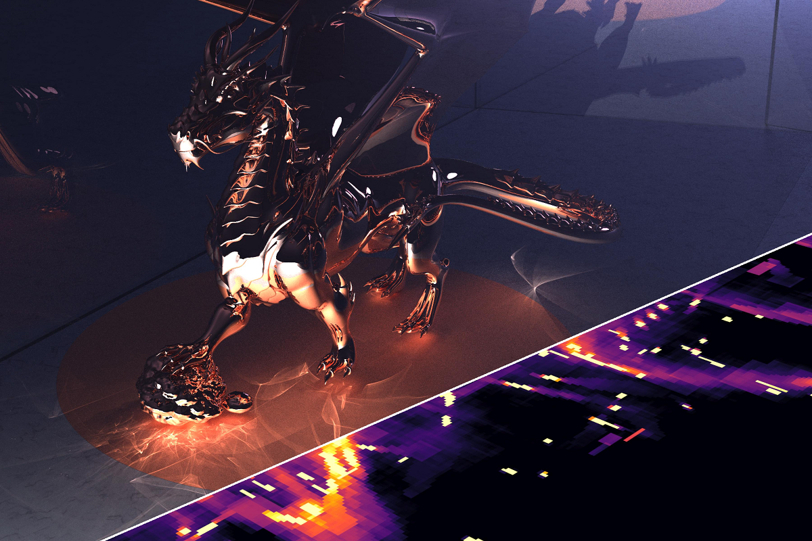
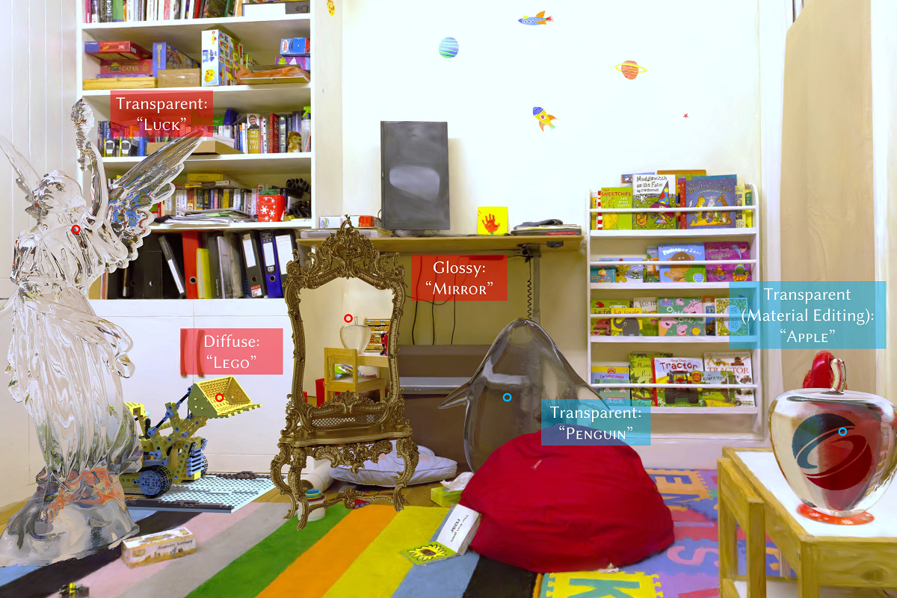
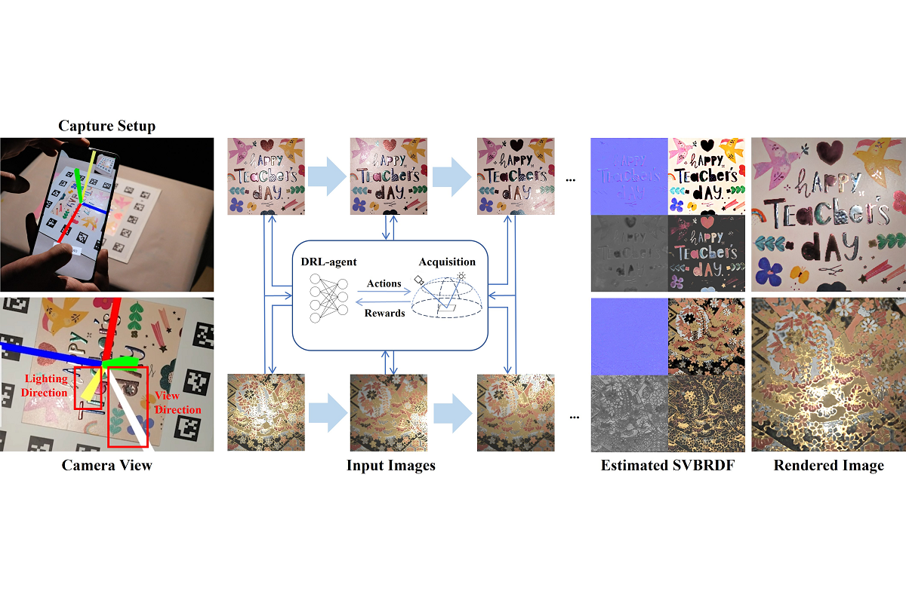

2025
 |
DSCombiner: Double Shrinkage for Combining Biased and Unbiased Monte Carlo Renderings Chenxi Zhou, Keheng Xu, Mufan Guo, Xianhao Yu, Zhimin Fan, Guihuan Feng, Yanwen Guo, Jie Guo SIGGRAPH Asia 2025 |
 |
Spectral-GS: Taming 3D Gaussian Splatting with Spectral Entropy Letian Huang, Jie Guo, Jialin Dan, Ruoyu Fu, Yuanqi Li, Yanwen Guo SIGGRAPH Asia 2025 |
 |
Multiple Importance Reweighting for Path Guiding Zhimin Fan, Yiming Wang, Chenxi Zhou, Ling-Qi Yan, Yanwen Guo, Jie Guo ACM Transactions on Graphics (Proceedings of SIGGRAPH 2025) [Project Website] |
|  |
Bernstein Bounds for Caustics Zhimin Fan, Chen Wang, Yiming Wang, Boxuan Li, Yuxuan Guo, Ling-Qi Yan, Yanwen Guo, Jie Guo ACM Transactions on Graphics (Proceedings of SIGGRAPH 2025) [Project Website] |
|  |
TransparentGS: Fast Inverse Rendering of Transparent Objects with Gaussians Letian Huang, Dongwei Ye, Jialin Dan, Chengzhi Tao, Huiwen Liu, Kun Zhou, Bo Ren, Yuanqi Li, Yanwen Guo, Jie Guo ACM Transactions on Graphics (Proceedings of SIGGRAPH 2025) [Project Website] |
|  |
Appearance-aware Multi-view SVBRDF Reconstruction via Deep Reinforcement Learning Pengfei Zhu, Jie Guo, Yifan Liu, Qi Sun, Yanxiang Wang, Keheng Xu, Ligang Liu, Yanwen Guo SIGGRAPH 2025 |
 |
GlossyGS: Inverse Rendering of Glossy Objects with 3D Gaussian Splatting Shuichang Lai, Letian Huang, Jie Guo<\b>, Kai Cheng, Bowen Pan, Xiaoxiao Long, Jiangjing Lyu, Chengfei Lv, Yanwen Guo IEEE Transactions on Visualization and Computer Graphics, 2025 |
 |
Decoupled Motion Prediction for Real-time G-buffer Free Frame Extrapolation Jiawei Zhang, Haonan Zhang, Zhang Weitao, Liang Pu, Feng Zesen, Jie Guo ACM MM 2025 |
2024